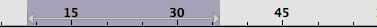
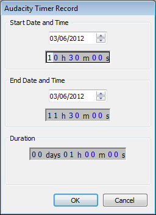

Playing and Recording
From Audacity Manual
Audacity offers many tools which allow the user to play all or part of a sound. There are also many recording options.
Controlling Playback and Recording
Transport Toolbar
The easiest way to control Audacity playback and recording is with Transport Toolbar:
This offers buttons (from left to right in the image above) for Pause, Standard Speed Play/Loop-Play, Stop, Skip to Start, Skip to End, Record/Append-Record.
Clicking Play plays from the cursor point to the end of the project, or from the start of the selection region to the end of that region.
The alternative Loop-Play action for the Play button is activated by holding SHIFT while clicking Play. The button changes to display two circular green arrows to indicate Loop-Play.
The alternative Append-Record action for the Record button is activated by holding SHIFT while clicking Record.
Clicking Play when the track is already playing or paused is a quick way to restart playback without first pressing Stop.
When you get more used to Audacity, it's often easier to use keyboard shortcuts for repetitive actions like playing, pausing and recording. Below is a list of the equivalent keyboard shortcut for each of the Transport Toolbar buttons, with a description of what each button and its shortcut does.
Button Shortcut What it does Pause P Press once to pause playback or recording then once to resume. Play or Stop SPACE Press once to start playback then once to stop. Starting playback again starts from its original starting position at the cursor. Loop-Play SHIFT + SPACE Play the entire selection repeatedly (or the entire track if no selection) until stopped. Skip to Start HOME Move the cursor to start of project. Skip to End END Move the cursor to end of project. Record R Record in a new track starting from the cursor position or start of the selection. Append-Record SHIFT + R Record starting from the end of the selected track(s).
There is an additional command which has the shortcut SHIFT + A. This acts exactly like SPACE when starting playback, but when used to stop, the cursor or start of the selection is set to the position where playback was stopped. Using either SPACE or SHIFT + A will then start playback from that stop position.
All the above shortcuts can be changed if desired in Keyboard Preferences.
Playing at slower or faster speeds than normal
Using the Play button in Transcription Toolbar plays at a constant speed but slower or faster than normal. Envelope Tool on the Tools Toolbar, when used in conjunction with a Time Track, allows a speed envelope to be drawn which can increase or decrease playback speed over the length of the audio.
Controlling and monitoring Playback volume
You can adjust the playback volume using the output level slider in the Mixer Toolbar.
The Playback Meter will show you the overall volume of all of your tracks when mixed together.
Playback
Playback Regions, Quick-Play Regions and Play Regions
The standard playback region associated with a shaded selection region in the waveform is indicated in the Timeline by a thin horizontal gray bar with arrowheads on each end. For example in the image below, a region from 9 to 31 seconds.has been drawn in the waveform, and the matching arrowed region in the Timeline also extends from 9 to 31 seconds. This region will always play once when you press SPACE or a play button.
- 
If there is only an editing cursor in the waveform, playback always starts from that cursor position and continues until the end of the project (unless you stop playback).
Whenever audio is played, a green downward-pointing triangle shows the current audio playback position. In the image below, playback starts at 9 seconds at the position of the editing cursor (represented in the Timeline by a black vertical line with left-pointing arrowhead). Playback had reached 14 seconds when the image was taken.
There may be times when you want to move around to hear arbitrary parts of the audio while still retaining the position of the editing cursor or region in the waveform. Quick-Play lets you drag in the Timeline to play that region immediately (or lets you click to start playback at that point immediately), without moving the waveform region or cursor and without having to stop and restart playback.
In the image below we dragged a Quick-Play region to play from 13 to 37 seconds. That region is indicated in the Timeline by a thick horizontal gray bar with arrowheads on each end, and playback was at 19 seconds when the image was taken.
If you hear some important audio during Quick-Play you can move the waveform region or cursor to that point without affecting Quick-Play playback, but this still allows you to restart standard playback from the important spot.
On occasion you may always want to play from the exact same point or region, even if the region or cursor in the waveform is elsewhere. You can use to lock playback to the current position of the editing cursor or playback region (or to the current position of the Quick-Play region or Quick-Play cursor). The locked region or cursor is indicated in the Timeline by a thick horizontal red bar with arrowheads on each end. In the image below, playback will always occur from 13 to 28 seconds until is used to release the Play Region.
Keyboard-and-mouse change of playback position
Another way to move the playback position to arbitrary points without stopping is to hold CTRL (or CMD on a Mac) then left-click in the waveform or track background. The key to hold while clicking cannot be configured in Keyboard Preferences.
| Be aware that using this command during recording will immediately abort the recording and play from the clicked position. |
Special Playback Keyboard Commands
Skip playback position by specified short and long periods
These commands skip the playback cursor backwards (left) or forwards (right) by a short or long period of time. The default short period skipped is one second and the default long period skipped is 15 seconds. You can change the length of the default short or long period to be skipped at "Seek Time when playing" in the Playback Preferences.
Action Shortcut Short seek backwards LEFT or , Short seek forwards RIGHT or . Long seek backwards SHIFT+LEFT or SHIFT+, Long seek forwards SHIFT+RIGHT or SHIFT+.
|
You cannot seek backwards to left of the current position of the playback cursor. |
Play relative to mouse pointer or selection
These are three keyboard commands that let you play a few seconds of audio without changing the selection. They can be really useful during editing, such as when you're trying to find the exact spot to cut and paste.
Action Shortcut Play One Second 1 Play To Selection B Play Cut Preview C
Play One Second (1)
Press 1 while the mouse is pointing to a particular point on the Timeline, and you will hear one second of audio centered on that time. The mouse does not need to be over the waveform itself, and the pointer can be inside a selection, so giving you a way to play one second of that selection, centered on the pointer. For example, position the mouse at 1.0 seconds and press 1 , and you will hear the time range from 0.5 to 1.5 seconds (below).
Play To Selection (B)

Suppose you've selected a range of audio (above), and you want to make sure it's exactly what you want to cut out. In order to determine whether you've selected exactly the right range of audio, you can not only listen to the selection, but you can position the mouse pointer so as to listen to any desired length of audio before or after the selection.
If you press SPACE, you'll hear the whole selection (indicated by the playback region shown in the Timeline) (below).
The "B" key lets you play the audio between the mouse pointer and the selection - what you hear depends on where the mouse pointer is. Move the mouse to a part of the audio you're interested in hearing, and press B, without clicking the mouse button (the first through the fourth images below).
If the mouse pointer is to the left of the selection and you press B, you'll hear the audio up to the selection.

If the mouse pointer is inside the left side of the selection and you press B, you'll hear the first part of the selection up to the mouse pointer.

If the mouse pointer is inside the right side of the selection and you press B, you'll hear from the mouse pointer to the end of the selection.

Finally if the mouse pointer is to the right of the selection and you press B, you'll hear from the selection to the mouse pointer.
B works in the same way to play to the cursor when there is no selection. If you place the pointer before the cursor, B plays from the pointer to the cursor. If you place the cursor after the pointer, B plays from the cursor to the pointer.
Play Cut Preview (C)
Press the C key to hear by default two seconds of audio before the selection and then one second of audio after the selection - thus simulating what playback would sound like if the selection was deleted. If you have multiple tracks selected, only the uppermost of the selected tracks is previewed. You can change the length of the audio that is played before and after the selection in Playback Preferences. If preferred, Play Cut Preview of a selection can also be performed by holding CTRL while clicking on the Play button in Transport Toolbar. Note that the normal solid green playback button will show a vertical split when the CTRL button is held.
In the image below, our selection started at 1.0 seconds. C played the two seconds of audio represented by the overlaid orange arrows. There was only only one second of audio between the start of the track and the selection, so only that was played rather than two seconds, then this was followed immediately by the specified one second after the selection.
Recording
Setting up
- Connect your input source to your computer and verify that you are getting sound into your computer using your computer's sound input control panel or the custom mixer application that came with your particular soundcard.
- Tell Audacity which source you have selected to record from.
- Set the recording level using the input slider on the Mixer Toolbar while watching the indications in the Recording Meter. Try to aim for a maximum peak of around –6.0 dB (or 0.5 if you have your meters set to linear rather than dB). Tip: enlarging the Meter Toolbars by clicking and dragging them helps with this task.
To listen to what you are recording you have two options.
- If you computer's sound control panel supports sending the audio input to the computer's audio output then make this setting there.
- If that is not possible, click on so that it is checked.
Alternatively, if you are using an external soundcard or mixer you may be able to monitor the signal directly from that device.
For further information on setting up see: Audacity Setup and Configuration.
Detailed step-by-step instructions for setting up for recording are provided in the Your First Recording and the Copying tapes, LPs or MiniDiscs tutorials.
| As soon as you have made a recording it is strongly recommended to it immediately to WAV or AIFF (ideally to an external drive) as a safety copy before you start editing the project. |
Recording a new track
Every time you click the Record button on Transport Toolbar, Audacity will create a new track and begin recording on that track from the current cursor position (or from the left edge of a region on the Timeline). There is no need to create a new track before starting to record. If you want recording to start from the beginning of the project, click the "Skip to Start" button on Transport Toolbar or press the HOME shortcut.
Recording a region in a new track
If there is no Timeline region, Audacity records until you stop the recording. To record only the Timeline region in a new track, use to create a new track if there are no tracks yet, select the region required in any track and ensure is enabled (on) which is its default setting. Overdub may also be enabled in Recording Preferences. There is no need for the track containing the region to be selected.
Continuing recording in a new track
Instead of stopping the recording with the Stop button or SPACE, you can stop the recording with the Play / Stop and Set Cursor shortcut SHIFT + A. When you record again, recording will start in a new track at the end-position of the track above.
Continuing recording in an existing track
There are two methods to continue recording on an existing track instead of starting a new track:
- Instead of stopping the recording, click the Pause button to pause recording, or use the P shortcut. Click to release the Pause button or press P to continue recording. Note you cannot edit while paused.
- Select the track you want add the recording to and, while holding down the SHIFT key, click the Record button. Alternatively, use the SHIFT + R shortcut. This is called "Append Record".
Overdubbing
You can record a new track while listening to previously recorded tracks. This is called overdubbing. To set up for overdubbing, make sure that is enabled (on) which is its default setting.
If there is a region in the Timeline, that region will be recorded in a new track. After stopping recording, Audacity will push the recorded track backwards by 130 milliseconds by default to attempt to align it with the previous tracks(s). Left-pointing arrows will appear at time zero when any of the recorded track is pushed behind zero (standard Export ignores audio before zero but Export Multiple includes it). It is recommended to perform a latency test to determine the optimum backwards correction then set that value at Latency correction in Recording Preferences.
Timer Recording
Yet another way to record is using the Timer Record dialog, found in the Transport Menu.
- 
Use it to start recording later, or to record for a certain duration before stopping.
Sound Activated Recording
If you turn on you can make recording pause until the input level exceeds the specified threshold level at .